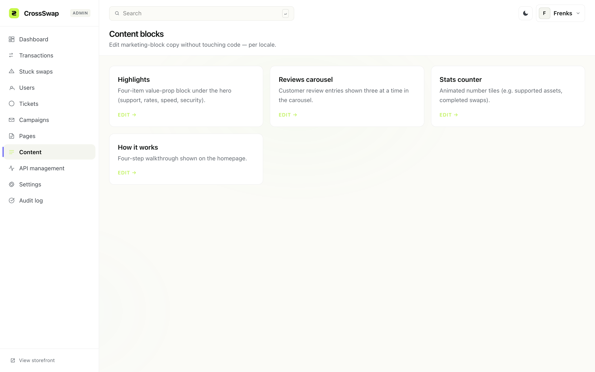
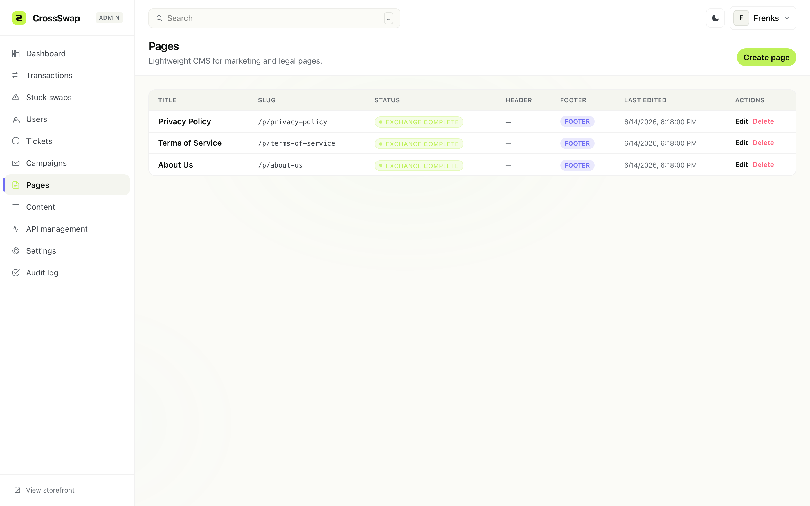
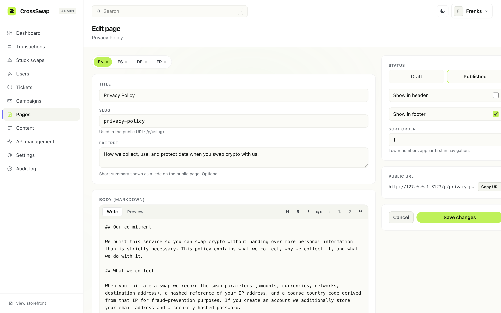

Configuration
Everything visitors see — brand, languages, currency lists, the AI chat assistant, and your ChangeNOW key — is editable from the admin panel. No server access required.
Features management
Every operational feature lives under one of the admin nav entries. This section maps each one to its URL and shows you the screen.
Dashboard
Open /admin. KPIs across the top (lifetime swaps, volume, fees, open tickets), a 14-day chart, recent transactions, and stuck-swap indicators — everything you need at a glance.

/admin. KPIs auto-refresh on a 60-second timer.Transactions
Open /admin/transactions. Filter by status, currency pair, or date; click a row to view the on-chain hashes, the original payload sent to ChangeNOW, and the polling history. The Export CSV button respects active filters.

Content CMS
Open /admin/content. New in 1.1.0 — edit the four homepage marketing blocks per locale without touching code:
- Highlights — icon + title + body cards under the hero.
- Reviews — testimonial carousel (name, role, quote, optional avatar).
- Stats — the animated counter band (volume, swaps, chains, etc.).
- How it works — the 3-step explainer band.
Each section has locale tabs at the top. Content::defaults() seeds a clean install so the homepage renders before you customise anything.

Pages CMS (multi-locale, Markdown)
Open /admin/pages. Each page lives at /p/{slug} on the public site. Per-locale title, excerpt, and body are backed by the page_translations table; filled-dot indicators in the locale-tab strip show which languages are complete.
The editor is a tabbed Write / Preview Markdown editor with a toolbar (headings, bold, italic, code, lists, links, blockquote). No external editor dependency — the preview reuses the storefront's own renderer so what you see is exactly what visitors get.


Tickets, Users, Campaigns
- Tickets —
/admin/tickets. Customer support queue. Reply inline; replies go out by email and are mirrored to the customer's ticket portal. - Users —
/admin/users. Customer accounts (lifetime swaps, volume, last seen, suspend/restore). - Campaigns —
/admin/campaigns. Newsletter / promo campaigns to the customer list with per-locale templates. - Audit log —
/admin/audit. Owen-It powered — every admin action is logged with before/after values. - API logs —
/admin/api-logs. Raw ChangeNOW request/response history, useful when debugging stuck swaps.
Settings tabs
Open /admin/settings. The page is split into tabs — each tab maps to a controller method and a dedicated form:
- Brand — name, tagline, logo (light / dark), favicon, social URLs, legal URLs.
- Theme — primary colour override, default theme (dark / light / auto), typography tweaks.
- SMTP — mail host / port / credentials / from address with a Send test email button.
- API — ChangeNOW key + referral address with a Test connection probe.
- AI — chat provider (OpenAI / Anthropic / disabled), key, model, assistant name, system prompt.
- Security — 2FA toggle, session lifetime, IP allow-list for the admin panel.
Branding
Open Admin → Settings → Branding. You can change everything below without rebuilding assets.
<title> tag.storage/app/public/brand/.dark (default), light, or auto.#bff15a by default. Applied via CSS variables, so no rebuild needed.Settings are cached for ten minutes — clear the cache after a change if you want to skip the wait:
php artisan cache:clearLanguages
CrossSwap ships with English, Spanish, German, and French translations. Toggle which ones are user-selectable from Settings → Languages.
To add a new language, see the Translations section below.
Visitor language is detected from:
- The
crossswap_langcookie if set (user explicitly picked one). - The
Accept-Languageheader otherwise. - The first enabled language as a final fallback.
Translations
All storefront strings live in flat PHP arrays under lang/<locale>/. Shipped locales:
lang/en/site.phplang/es/site.phplang/de/site.phplang/fr/site.phplang/<locale>/emails.phplang/<locale>/help_articles.phpAdd a new locale
- Copy the English file as the starting point:
cp lang/en/site.php lang/it/site.php cp lang/en/emails.php lang/it/emails.php cp lang/en/help_articles.php lang/it/help_articles.php - Translate the values in each file. Every key must exist; missing keys fall back to the default locale.
- Append the new locale code to the
languagesarray inconfig/swapforge.php:'languages' => ['en', 'es', 'de', 'fr', 'it'], - Rebuild the cache so the new locale is picked up:
php artisan optimize:clear - Open Admin → Settings → Languages and toggle the new locale on so the language picker exposes it on the storefront.
Translation parity verification
This one-liner counts the flat keys per locale — the four numbers should match. Any divergence points to missing translations:
php -r '$flat=function($a,$p="") use (&$flat){$o=[];foreach($a as $k=>$v){$n=$p===""?$k:"$p.$k";is_array($v)?$o=array_merge($o,$flat($v,$n)):$o[]=$n;}return $o;};
foreach(["en","es","de","fr"] as $l){printf("%s: %d keys\n", $l, count($flat(require "lang/$l/site.php")));}'Sample output on a clean install:
en: 412 keys
es: 412 keys
de: 412 keys
fr: 412 keystests/Feature/TranslationParityTest.php assertion if you want CI to catch missing keys when you add a new locale.
ChangeNOW API key
CrossSwap integrates with ChangeNOW, a non-custodial cross-chain swap provider. A free partner account gets you an API key plus a commission on every swap.
- Sign up at changenow.io/affiliate.
- From the partner dashboard, copy your API key.
- In CrossSwap admin, open Settings → API management and paste it into the ChangeNOW API key field.
- (Optional) Paste your Referral / partner address — this routes commission to your preferred wallet.
- Click Save. The form probes the live API before persisting.
Is it really free?
Yes. Partner accounts cost nothing. ChangeNOW earns from the spread baked into each swap rate and shares a percentage with you on every transaction your storefront produces. There is no monthly fee, minimum volume, or KYC requirement to obtain a key.
How do commissions work?
Every swap created through your CrossSwap installation is automatically attributed to your partner account. The commission percentage is set by ChangeNOW (typically 0.4% – 0.5% of swap value). Payouts arrive on the schedule set in your partner dashboard — usually weekly or on demand.
AI chat assistant
CrossSwap bundles an optional AI support assistant that answers visitor questions in real time. Open Settings → Chat.
none, openai, or anthropic.gpt-4o-mini (OpenAI) or claude-haiku-4-5 (Anthropic).OpenAI
- Create an account at platform.openai.com.
- Visit API keys and click Create new secret key.
- Paste the key into CrossSwap, pick a model (
gpt-4o-miniis the cheapest competent option), and save.
Anthropic
- Create an account at console.anthropic.com.
- Visit Settings → API Keys and create a key.
- Paste it into CrossSwap, pick a model (
claude-haiku-4-5for cost,claude-sonnet-4-7for quality), and save.
Testing
Use the Send test message button in the settings page. It calls the same code path the storefront uses and returns the assistant's reply inline. If the key is invalid or rate-limited, the panel shows the upstream error.
routes/api.php.
Legal URLs
The address-entry step links to your legal pages. Set them under Settings → Legal:
terms_urlprivacy_urlaml_urlIf you leave a field blank, the storefront hides the corresponding link instead of pointing at a broken URL.
Featured and blacklisted currencies
Pin the most popular tickers to the top of the currency selector under Settings → Currencies. The defaults:
['btc', 'eth', 'usdt', 'bnb', 'sol', 'usdc', 'xmr', 'ada', 'trx', 'doge']The Blacklist field hides any ticker you don't want available — useful if a coin is restricted in your jurisdiction or repeatedly causes stuck swaps.

Queue worker & scheduler
CrossSwap defines two Horizon supervisors:
default— handles emails and one-off jobs (4 workers in production).exchange-polling— polls in-flight swaps for status (6 workers in production).
Start Horizon:
php artisan horizonVisit /horizon while signed in as an administrator to watch the queues in real time. The cron entry that ties everything together:
* * * * * cd /var/www/crossswap && php artisan schedule:run >> /dev/null 2>&1Stuck-transaction thresholds
By default, swaps that remain in waiting for over 180 minutes or in confirming for over 360 minutes are flagged as stuck and admins are notified by email. Adjust the thresholds in config/swapforge.php:
'tx_stuck' => [
'waiting_minutes' => 180,
'confirming_minutes' => 360,
],Production checklist
APP_ENV=productionandAPP_DEBUG=falsein.env.- HTTPS forced (already wired when
APP_ENV=production). - Horizon supervised by
systemdorsupervisord. - Cron entry verified with
crontab -l. - Outbound HTTPS reachable to
api.changenow.io. - SMTP credentials tested with
php artisan tinker→Mail::raw(...).